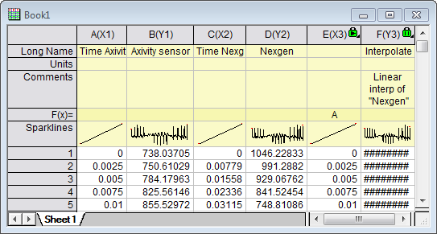
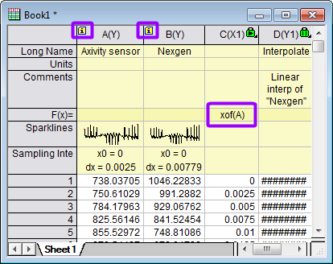

Letztes Update: 17.10.2019
Um zwei Sensorsignale, die mit unterschiedlichen Abtastraten aufgezeichnet wurden, zu synchronisieren, können Sie das Hilfsmittel Interpolation in Origin verwenden. Angenommen, Sie haben vier Spalten für zwei Signale im Arbeitsblatt: X1, Y1, X2 und Y2, und Sie möchten zwei Signale mit der gleichen Abtastrate wie X1. Fügen Sie zuerst eine neue Spalte auf der rechten Seite hinzu. Setzen Sie sie als X, klicken Sie mit der rechten Maustaste auf die Spalte und wählen Sie Werte setzen im Kontextmenü. Geben Sie im aufgerufenen Dialog A ein, um eine Kopie von X1 zu erstellen. Wählen Sie Analyse: Mathematik: Y von X interpolieren/extrapolieren im Origin-Menü. Wählen Sie die neue Spalte unter Zu interpolierende X-Werte und die X2Y2-Spalten als Eingabe. Die erstellte Y3 (Spalte F) hat die gleiche Abtasrate wie Y1.

Wenn Sie zwei Signale der zwei Y-Spalten mit Abtastintervall haben, fügen Sie zuerst eine neue Spalte auf der rechten Seite hinzu. Setzen Sie sie als X, klicken Sie mit der rechten Maustaste auf die Spalte und wählen Sie Werte setzen im Kontextmenü. Geben Sie im aufgerufenen Dialog xof(A) ein, um eine Kopie von dem X von Y1 (Spalte A) zu erstellen. Befolgen Sie die gleichen Schritt wie oben, um Y3 (Spalte D) zu erstellen, die die gleiche Abtastrate wie Y1 (Spalte A) hat.

Schlüsselwörter:synchronisieren, Abtastraten, Interpolation, interpolieren, Abtastintervall, Mathematik